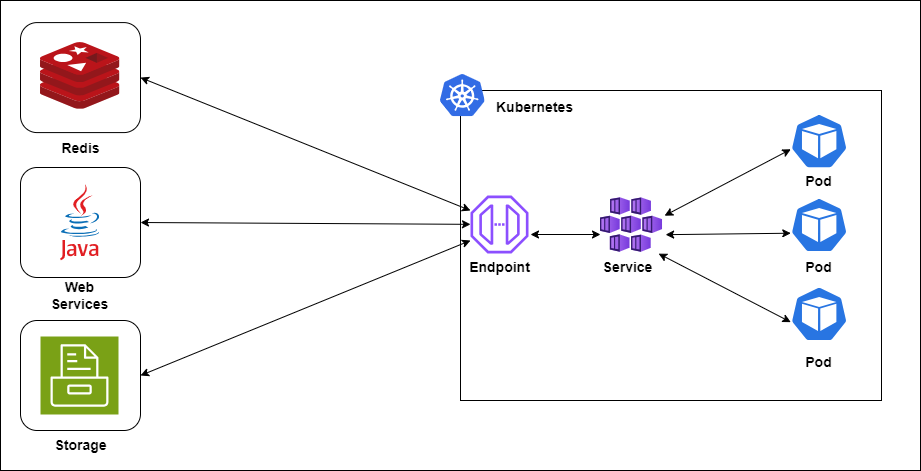
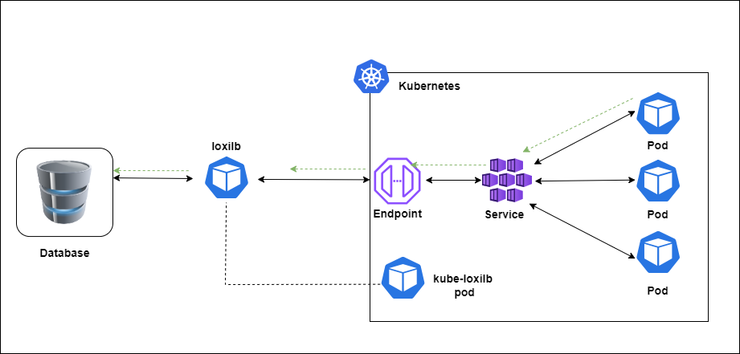

In Kubernetes, there are two key concepts - Service and Endpoint.
What is Service?
A "Service" is a method that exposes an application running in one or more pods.
What is an Endpoint?
An "Endpoint" defines a list of network endpoints(IP address and port), typically referenced by a Service to define which Pods the traffic can be sent to.
When we create a service in Kubernetes, usually we do not have to worry about the Endpoints' management as it is taken care by Kubernetes itself. But, sometimes not all the services run in a single cluster, some of them are hosted in other cluster(s) e.g. DB, storage, web services, trancoder etc.
When endpoints are outside of the Kubernetes cluster, Endpoint objects can still be used to define and manage those external endpoints. This scenario is common when Kubernetes services need to interact with external systems, APIs, or services located outside of the cluster. Here's a practical example:
Suppose you have a Kubernetes cluster hosting a microservices-based application, and one of the services needs to communicate with an external database hosted outside of the cluster. In this case, you can use an Endpoint object to define the external database endpoint within Kubernetes. In that case, your cloud-native apps needs to connect to the external services with external endpoints.

Service with External Endpoint
You can create an external service with loxilb as well. For this, You can simply create an Endpoint Object and then create a service using this endpoint object:

endpoint.yml
apiVersion: v1
kind: Endpoints
metadata:
name: ext-tcp-lb
subsets:
- addresses:
- ip: 192.168.82.2
ports:
- port: 80
Create endpoint object:
$ kubectl apply -f endpoint.yml
View endpoints:
$ kubectl get ep
NAME ENDPOINTS AGE
kubernetes 10.0.2.15:6443 16m
ext-tcp-lb 192.168.82.2:80 16m
service.yml
apiVersion: v1
kind: Service
metadata:
name: ext-tcp-lb
spec:
loadBalancerClass: loxilb.io/loxilb
type: LoadBalancer
ports:
- protocol: TCP
port: 8000
targetPort: 80
Create Service:
$ kubectl apply -f service.yml
View Service:
NAME TYPE CLUSTER-IP EXTERNAL-IP PORT(S) AGE
kubernetes ClusterIP 10.43.0.1 <none> 443/TCP 16m
ext-tcp-lb LoadBalancer 10.43.164.108 llb-20.20.20.1 8000:30355/TCP 15m